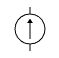
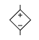
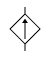

恒定电流
电路概述
电流定义
电流：
电流：电荷的定向移动。
电流方向于正电荷运动方向相同，与负电荷（电子）运动方向相反。
电流的分类：
恒定电流：大小和方向都不变的电流。
直流电：方向不变的电流。
交流电：方向改变的电流。
物理学定义：
定义：单位时间内通过导体横截面的电荷量。
定义式：。
额外的，有微观表达式：。
其中 表示通过导体横截面的电子数。
其中 表示电子的电荷量。
其中 表示导体的横截面积大小。
其中 表示导体中自由电子的运动速率。
三种速度数量级：
电子定向移动速率：。
电子热运动速率：。
电子的传导速率：，即电场的形成速率。
电子运动速度这么低，为什么平常开灯的时候，按下开关的一瞬间灯就亮了呢？按下开关的一瞬间，导线内部的电场线光速建立好，使导线内部所有电子瞬间开始移动。注意这个过程是导线内所有电子同步开始移动的，虽然导线内开关处的电子移动到导线内灯泡处需要很长时间，但导线内灯泡处已经有电子了，这里的电子瞬间移动，就可以做功使灯泡发光。
电流既不依赖电路，也不依赖电源，任何电荷定向移动的情形都可以称作电流。如氢原子电子绕核运动可以等效为环形电流；原电池电解质溶液内离子的定向移动可以等效为电流；令一个摩擦后带上负电的橡胶棒向右运动，也可以等效为一个向左的电流。
一个 原子的电子绕核运动可等效为一环形电流。已知电子电量大小 ，周期 ，绕质子顺时针运动。求电流的方向和电流强度 的大小。
我们知道，「电流的电流强度的大小是多少」这种问题，应该在电流是恒定电流的时候才有意义。然而这类环形电流模型有点不符合常规的恒定电流：它并不是相当于导线内部处处有电子，而只是一个孤立电子在运动。这会导致一个问题：考虑钦定 这个时间，那么一半的横截面被电子经过，另一半却没有，这真的是恒定电流吗？
与力学不同，载流子（这里是电子）是一粒一粒的，因此电流通常是在 统计意义下 讨论的，并不适用对于极度微小的时间上的讨论。事实上，对于恒定电流，我们不能保证在两段相等的微小时间内，经过电路中某一点的电荷总量绝对相同。足够严谨的说法是：在宏观尺度上选取任意两段相等的时间，经过电路中某一点的电荷总量几乎不变，也即 「恒定」是一个宏观意义上统计出的结果。
电子绕核运动速率很快， 很小。在统计意义上，对宏观尺度的时间计时，那么每个横截面经过电荷总量都近似相等，且与时间成正比，这就说明它是一个恒定电流。
那怎么计算这个恒定电流的大小呢？在统计意义上每个横截面经过的总电荷总量大小都近似相等，且与时间成正比，那这个比值就是电流大小了！分析一下这个比值，考虑经过宏观时间 后，电子应近似做了 次圆周运动，那么经过每个横截面的总电荷总量大小为 。除以总时间 即可得到电流大小 。
或者，可以直接钦定经过时间为 的倍数，比如直接钦定为 。那么经过每个横截面的电荷总量就是 ，可以直接计算得 。这里虽然选用了微小时间，但是它可以保证计算出的结果在统计意义上也正确，因为在统计意义上，一段宏观时间的电子运动就是很多次圆周运动拼起来（一次运动了部分圆周的运动可以忽略），而无论多少次圆周运动拼起来，统计意义上计算出的电流都等于 。
因此，对于单电子环形电流问题，取周期 计算经过每个横截面的总电荷总量大小即可。
电流的方向为电子定向移动方向的反方向，即逆时针方向。经过时间 后，经过任一横截面的电荷总量大小为 。因此，电流大小为 。
欧姆定律
欧姆定律表明：处于某状态的导电体（定温下），其两端的电压与通过电导体的电流成正比，即：
人教版高中物理教材指出：欧姆定律适用于金属、电解液导电，不适用气态导体和半导体导电。
哈里德《物理学基础》指出，欧姆定律要求通过一器件的电流始终正比于加到该器件上的电势差。
也就是说，欧姆定律仅适用于线性电路。
电动势与电流的比例，即电阻，不会随着电流而改变。根据焦耳定律，导电体的焦耳加热与电流有关，当传导电流于导电体时，导电体的温度会改变，这称为温度效应。电阻对于温度的相关性，使得在典型实验里，电阻跟电流有关，从而很不容易直接核对这形式的欧姆定律。
需要注意的是，欧姆定律并没有提到电阻，而电阻的定义式与欧姆定律非常类似：
实际上有一定区别：
欧姆定律仅限于线性电路。
电阻的定义式对于任意元件成立，因为电阻与电路无关。
这也是欧姆定律的一个常见错误认知1。
温度降低时，金属导体电阻率将会减小，一些金属在温度特别低时电阻可以减小到 ，称之为超导现象。目前发现的超导体只能在很低温度下保持超导性质。
在恒定电场的作用下，导体中的自由电荷做定向运动，在运动过程中与导体内不动的粒子不断碰撞，碰撞阻碍了自由电荷的定向运动（这个阻碍作用对应的就是导体的电阻）。
超导体上欧姆定律不成立，可以这样认为：欧姆定律适用于「电荷仅受电场力和与导体内不动粒子碰撞产生的阻力两个力作用」的情形，然而这里「电荷仅受电场力作用」。
电阻定律
我们知道电阻的决定式如下：
其中 为电阻率。
而对于一个均匀的柱体电阻，可以得到：
焦耳定律
发热量：
电功推导：
而热功率和电功率分别除以时间就可以了。
以上三个公式，适用于任何电路，而对于纯电阻电路才可以根据欧姆定律得到 ，我们将在电动机部分详细解释。
电路应用
电动势
电动势表征一些电路元件供应电能的特性（非静电力做功的本质），这些电路元件称为电动势源，而电动势源所供应的能量每单位电荷是其电动势，有公式表达：
即把 正电荷从负极运回正极所做的功。通常，这能量是分离正负电荷所做的功，由于这正负电荷被分离至元件的两端，会出现对应电场与电势差。

| 符号 | 符号 |
|---|---|
理想电压源  | 理想电流源  |
| 受控电压源  | 受控电流源  |
单电池  | 电池组  |
电池内阻相当于一个电池串联一个电阻，如果没有特殊说明，电池的内阻不可忽略。
串并联规律
串联规律：
电流 相同、分压 。
等效电阻为一个 的电阻。
并联规律：
电压 相同，分流 。
等效电阻为一个 的电阻，记为鸡在和上飞。
串联电路：根据以上两个基本特点，运用欧姆定律，很容易得到以下三个推论。
串联电路的总电阻(等效电阻)等于各电阻之和，即
串联电路中各电阻的电压与它们的阻值成正比，或者说，电压按阻值成正比分配，即
串联电路中各电阻消耗的电功率与它们的阻值成正比，即
并联电路：根据以上两个基本特点，运用欧姆定律，也可以得到三条推论。
并联电路的总电阻(等效电阻)的倒数等于各电阻的倒数之和，即
并联电路中各支路的电流与它们的电阻的倒数成正比，即
并联电路中各电阻消耗的电功率与它们的电阻的倒数成正比，即
电源的串并联
我们只考虑 个一样的电源（）串并联：
串联：电动势增加，内阻增加。
并联：电动势不变，内阻减小。
聪明的你想到用 个电池连成方格，于是电动势增加，内阻不变。
伏安特征曲线
只有图像是一条过原点的直线，才是线性元件，斜率是 。
电灯泡随着电流、电压、电功率增大，电阻增大。
曲线向 轴偏移为电压增加电阻变大，向 轴偏移为电压增大电阻变小。
电流的能量
电源的功率：。
电源输出功率：
功率最值问题：
若研究对象为定值： 时功率最大。
若研究对象在改变： 时功率最大。
当 时电源输出功率为最大：，此时电源效率：。
闭合电路
基本概念：
内电路：电源内部的电路，。
外电路：电源外部的电路，。
测外电压（路端电压）：直接把电压表并在电池两端。
在闭合电路部分，除非特殊说明，电表和电池一般不能看做理想的。
理论基础：串并联规律、欧姆定律。
滑动变阻器电阻增大 总电阻增大 总电流减小 内电路电压减小、外电路电压增大。
总电流减小，一条支路电流增大，另一条支路（滑动变阻器所在支路）电流减小。路端电压增大，滑动变阻器串联的电阻电压减小，滑动变阻器电压增大。
电路故障：将短路视为电阻减小到零，断路视为电阻增加到无穷大。
串反并同：前提是电源有内阻，外电路仅有电阻串联后并联。对于电流、电压、电功率，与滑动变阻器串联的用电器与滑动变阻器阻值变化相反，与滑动变阻器并联的用电器与滑动变阻器阻值变化相同。
未知电源电动势、内阻：联立两个方程，
对两个状态列方程即可。
问题：
若研究对象电阻为定值：
若研究对象电阻在改变：
含容电路：
恒定电路中电容器所在支路没有电流流过，把电容器看做一个理想电压表。
通过电势法求出电容器两端的电势差，通过 算出电荷量。
如果电容器被直接串联在电池上，电路中没有电流，电容器电势差即为电源电动势。
回路基础
电压源和电流源
电压源（理想电压源）具有两个基本的性质：
它的端电压为定值 ，或为一时间函数 ，与流过的电流无关。
电压源自身电压是确定的，而流过它的电流是任意的。
常见实际电源的工作机理比较接近电压源，例如发电机以及蓄电池。电压源具有低内阻并且作为恒压电路工作。由于短路时会流过大电流，因此需要安全装置。
实际上，如果一个电压源在电流变化时，电压的波动不明显，我们通常就假定它是一个理想电压源。
电流源（理想电流源）具有两个基本的性质：
它提供的电流是定值 ，或是一定的时间函数 与两端的电压无关。
电流源自身电流是确定的，而它两端的电压是任意的。
电流源具有很大的内阻（理想状态是内阻无限大）并且作为恒流电路工作。由于负载波动，电压波动较大。实际上，如果一个电流源在电压变化时，电流的波动不明显，我们通常就假定它是一个理想电流源。
像光电池一类的器件，工作时的特性比较接近电流源。
电压源的工作原理
如图：

设 为电源电动势， 为内阻， 为负载， 为施加电压， 为电流：
因此：
如果 ，则 。因此，输出电压的波动不明显。
戴维南定理和诺尔顿定理：

基尔霍夫电路定律
基尔霍夫电路定律（基尔霍夫定律）涉及了电荷的守恒及电势的保守性。
支路：
- 每个元件就是一条支路。
- 串联的元件我们视它为一条支路。
- 在一条支路中电流处处相等。
节点：
- 支路与支路的连接点。
- 两条以上的支路的连接点。
回路：
- 闭合的支路。
- 闭合节点的集合。
基尔霍夫电路定律包括以下两条电路学定律：
基尔霍夫电流定律（基尔霍夫第一定律，KCL）。
基尔霍夫电压定律（基尔霍夫第二定律，KVL）。
基尔霍夫定律建立在电荷守恒定律、欧姆定律及电压环路定理的基础之上，在稳恒电流条件下严格成立。
当基尔霍夫第一、第二方程组联合使用时，可正确迅速地计算出电路中各支路的电流值。
对于含有电感器的电路，必需将基尔霍夫电压定律加以修正。
由于含时电流的作用，电路的每一个电感器都会产生对应的电动势 。
必需将这电动势纳入基尔霍夫电压定律，才能求得正确答案。
例题一：
可以列出三个式子：
已- 知 ，可以求出 。
例题二：

根据基尔霍夫第一定律：
将基尔霍夫第二定律应用于回路 ：
将基尔霍夫第二定律应用于回路 ：
已知：，，，，。
解得：
注意到电流 带了负号，这意味着我们 的假定方向不正确。
这也意味着基尔霍夫电路定律解题不完全需要电流方向已知。
基尔霍夫电流定律
又称：基尔霍夫第一定律，KCL。
定义：所有进入某节点的电流的总和等于所有离开这节点的电流的总和。
或者：设电流流入为正，流出为负，则所有涉及某节点的电流的代数和等于零。
基尔霍夫电流定律是节点分析的基础定律。
对于方程表达：；其中， 是与这节点相连接的第 个支路的电流。
如图，有 ，或者可以写成 的形式。
基尔霍夫电压定律
又称：基尔霍夫第二定律，KVL。
定义：沿着闭合回路所有器件两端的电势差（电压）的代数和等于零。
或者：沿着闭合回路的所有电动势的代数和等于所有电压降的代数和。
基尔霍夫电压定律是网目分析的基础定律。
对于方程表示：；其中， 是器件两端的电压。
基尔霍夫电压定律不仅应用于闭合回路，也可以把它推广应用于回路的部分电路。
- 顺着电流的方向走，如果设定的电流是 ，走过的电阻是 ，则电压降低 ，逆着电流走，则升高 。
- 走过一个电动势为 的电源，如果是负到正，则电压升高 ；如果是正到负，则电压降低 。
- 当然，更常用的方法是，设的时候不考虑正负，结果带入符号。
如图，有 ，或者可以写成 的形式。

在具体使用回路电压方程时，应注意：
选用的回路中，必须有一段是没有用过的电路。
设定各条支路中电流的方向，在电流方向不明确的情况下，可以任意设。如果最后解出来的电流值为正，则真实电流方向与设定的方向相同；如果最后解出来的电流值为负，则真实电流方向与设定的方向相反。
分析拓展
线性电路
线性元件：
在电路中电流与电压有线性关系的电子元件，例如金属导体和电解液。
在温度不变的情况下，其两端电压和电流的关系就可以近似的认为是线性的。
理想的电阻是最普遍的线性元件，常见的线性元件还有理想的电容和电感。
在伏安特性曲线中，表示为一条过坐标轴原点的直线的器件，一定是线性元件。
注意：材料并不是线性元件的决定因素，例如避雷器在高电压下电阻值变小。
线性电路：
电子线路的基本类型之一，是指响应与输入信号成正比的电路。
从构成上，线性电路是指完全由线性元件，独立电源和线性受控源构成的电路。
其特点是输入信号的变化会导致输出信号的相应变化，输出信号与输入信号之间存在线性相关性。
叠加定理
叠加定理的描述：
定义上：对于一个线性系统，一个含多个独立源的双边线性电路的任何支路的响应，等于每个独立源单独作用时的响应的代数和，此时所有其他独立源被替换成他们各自的阻抗。
具体的：在线性电路中，任一支路的电压或电流（不包括功率等），都等于独立电源单独作用在该支路产生的电压和电流的代数和。
形式化：在一个线性元件组成的电路中，一条电路上的电压和电流，是周围其他电压源或电流源在这条电路上单独作用后叠加在一起产生的。
还有的：对于任一线性网络，若同时受到多个独立电源的作用，则这些共同作用的电源在某条支路上所产生的电压或电流等于每个独立电源各自单独作用时，在该支路上所产生的电压或电流分量的代数和。
求解步骤：
做出每个独立电源单独作用的电路分图，不作用的独立源置零：
- 电压源短路：从而消除电压，即令 ；
- 电流源开路：从而消除电流，即令 。
求各电路分图中的相应，求代数和。
注意事项：
- 只适用于求电压、电流，不适用于求功率；也不适用于非线性电路。
- 某个独立电源单独作用时，其余独立源全为零值。
- 代数和指分量参考方向与原方向一致取正，不一致取负。
- 要计算电功率，我们应该先用叠加定理得到各线性器件的电压和电流，然后计算出倍增的电压和电流的总和。
线性电路的齐次定理，即叠加定理的齐次性：
在线性电路中当所有独立源同时缩放 倍（ 为实常数）时，响应也将同样增大或缩小 倍。
无穷电路
一类比较简单的无穷电路所含的器件是相同的，如图所示的电路就属于这一类，组成电路的所有电阻的阻值都是 。

不难看出，这个电路是由很多单元组成的，每一个单元包含三个电阻，既然电路的右端是无穷的，那么左端多一个单元、少一个单元是不影响整个电路的电阻的，也就是说从 两点向右看和从 两点向右看的电阻是一样的，设从 两点向右看的电阻是 ，那么有：
解得 。
另一类比较复杂的无穷电路所含的器件是不同的，但有一定的规律，如图所示的电路就属于这一类，电路也同样由九数多个单元组成，相邻的后面一个单元电阻的阻值要比前一个单元的阻值大一倍。
这一类无穷电路需要寻找规律，把从 向右看的总电阻和从 向右看的总电阻进行比较，后者对应的单元都要比前者大一倍，所以后者的总电阻也要比前者大一倍，设从 向右看的总电阻为 ，那么有：
解得 。
对称性简化
所谓对称性简化，就是利用电路网络中可能存在的各种对称性，作出某种判断或结论，以简化等效电阻计算。
平衡对称电路：
对一个电路，用垂直平分端口的平面横切，可将该电路切成上下完全相同的两部分，而且这两部分之间没有交叉连接和支路，这种电路称为平衡对称电路。
所用的横切面，即该电路对端口的平衡对称面，如右图中的 平面。一般情况下，平衡对称面只有一个。如在端口处加上电压，则在平衡对称面上的点都是等势点，该平面是一个等势面。

传递对称电路：
对一个电路，用过端口的平面直切，可将该电路切成左、右完全相同的两部分，这种电路称为传递对称电路。
所用的直切面，即该电路的传递对称面，如右图中的 平面。传递对称面可能不止一个。与传递对称面对称的点称为传递对称点。如在端口处加上电压，每一对传递对称点的电势都是相等的。
应当指出的是，对称性简化往往并不给出等效电阻的某种直接计算公式，而只是使电阻的计算得到简化，最终的结果仍有赖于电阻串、并联的公式，电流分布法，极限法等计算完成。
一道例题
题目描述
有电路如图乙所示（图中电流表为理想电流表）：

电路参数为：，，，，，，，，，。
电路正常工作时，电流表的示数是多少？
基尔霍夫电路定律
如图，存在两条回路 、，假设电流流向为从 、 正极出发，干路、支路电流分别为 ，、：
对节点 应用基尔霍夫第一定律，得 。
对回路 、 分别应用基尔霍夫第二定律，最终可列出方程组：
代数，得：
化简得：
解得：
分析可知，我们假设的 电流流向是错误的，而电流表示数为 。
电路的叠加定理
忽略电流表，可以发现图中仅存在电阻和电压源，因此该电路是线性电路，存在电路的叠加原理。
分别考虑 ，， 的影响，设 、、 其电流表的示数，以电流从上到下为正值，从下到上为负值：
极易得：
根据叠加定理，得出电流表示数 。
电流源与电压源
这也是原题想让我们应用的方法，这里先对题目的铺垫加以简单总结。
我们发现，一个内阻为 的电压源 ，等效如图丙。
其串联一个总电阻为 的用电器（或等效用电器）后，干路电流为：
我们发现 为电源的特性，于是想办法凑出来这个形式：
注意到后面的式子就是并联分流公式，我们转化电路形如图丁。
于是，我们就把一个内阻为 的电压源 串联一个总电阻为 的用电器，等效转化为了一个电流源 并联上原电压源内阻，以及用电器 。
回到问题，（如图）我们可以把原电压源 、 及其内阻、支路电阻等效转化为一个电压源：

- 把电压源 同其内阻 及并联的电阻 抽象为一个电压源 ，内阻为 ，也就等效为一个电流源 ，并联电阻 ；具体的，电阻 ，电流 。
- 把电压源 同其内阻 及并联的电阻 抽象为一个电压源 ，内阻为 ，也就等效为一个电流源 ，并联电阻 ；具体的，电阻 ，电流 。
观察到，这两个电流源（电流流向一致，电流大小相加）就可以合并为一个电流源。
具体的，电阻 ，电流 ；
这个电流源也就等效于一个电压源，电压为 ，。
其电流方向与 相反，电压相减 ，
其总电阻 。
于是，电流表示数即为 。
简单欧姆定律
我们把原图抽象为三个支路，其电流分别记为 、、，如图：
我们假设有一个奇妙的总电源，给红色的和蓝色的部分，提供了大小为 的电势差。
我们规定红色部分的电势高于蓝色部分，即 ，则有 。
据此，我们可以列出三个方程：
代数即（其实这个就是基尔霍夫第二定律的意思）：
发现原式与 、、 关系密切，尝试找到他们之间的关系。
设电路的等效电阻为 ，注意到 只提供了 的电流，则有：
回到原电路，我们发现并没有这个奇妙的电源，也就是 ，
因此有（其实这个也是基尔霍夫第一定律的内容）：
这意味着 、、 中一定存在负数。综合上述四式，解得：
则电流表示数为 的绝对值，即电流表示数为 。